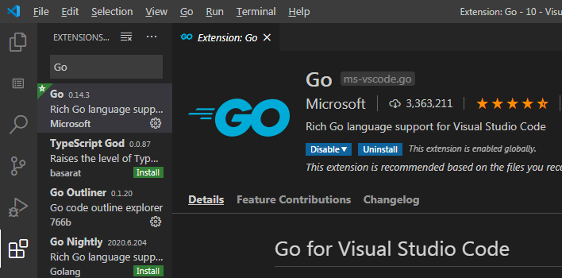
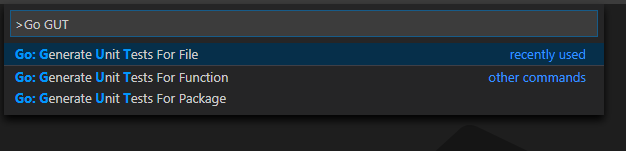

每次写 LeetCode 解题，都会强调 准备纸笔 和 单元测试。但这是正确的废话，特别是单元测试。老手看来这是常识，新手听说了却也还是不知道具体怎么操作。
那今天就来说一说。
环境
下面用 VS Code 写 Go 举例。
VS Code 是开源 IDE 里一个不错的选择。依托强大的插件生态，啥开发都能做。我现在基本把各种开发都挪里面，甚至包括 幻灯制作 和 一些简单的制图。
但 VS Code 不是唯一的选项，你也不一定写 Go。很多朋友觉得 IDEA 更好用（具体到 Go 是 GoLand），也有人习惯 Eclipse，我也体会过 Vim 纯用键盘工作的效率。这无所谓，只是提供一个思路，在你习惯的 IDE 和 语言也总是可以找到工具提高效率的。就是商业软件记得买授权，要不就用免费开源的社区工具。
配置
VS Code 的安装，跟着官网走，不展开。Go 环境的安装配置，也不是重点。
打开 VS Code，在扩展商店（Extensions）搜索 Go ，一般排在第一位的结果就是要安装的插件。（插件描述为 Rich Go language support for Visual Studio Code。开发者就是 Microsoft。）

安装完插件，它会提示安装各种 Go 开发需要用到的工具，按提示同意安装即可。注意的是，这些工具需要用到 go get / install 命令，所以走到这一步之前，先确认 Go 的环境已经配置好了。
下面我们主要用到 gotests 。如果已经安装，这一部分就可以跳过了。
如果不确定，按 F1 或者 Ctrl + Shift + P唤出指令面板（Command Palette），输入 Go: Generate Unit Tests ，如果出现三个提示 For File ，For Function，For Package ，就说明安装好了。实际上，指令面板的内容不需要完整输入，只输入开头一部分，或者首字母（像 GGUT），都能够智能匹配。善用指令面板，可以一定程度上摆脱鼠标。

如果没有，唤出指令面板，执行 Go: Install/Update Tools，找到 gotests 安装即可。
干活
这里用 LeetCode 的题目 https://leetcode.com/problems/regular-expression-matching/ 举例。
实际开发稍复杂一些，原理是一样的。主要差别是，题目帮你定好了函数签名；而实际工作中，如何模块化、如何命名、传递哪些参数，恰恰是比较难的一部分。不过，如果题目比较复杂，最好也不要一个函数到底，也要考虑抽取模块梳理逻辑，还有复用。
初始化
题目要求实现一个函数，返回字符串 s 和 正则式 p 是否匹配（bool 值）。函数签名为 func isMatch(s string, p string) bool 。
VS Code 打开工作目录。我启用了 go modules ，需要初始化 go.mod ，module name 随便给一个： go mod init leetcode 。然后新建一个 ans.go 文件用来写代码实现：
|
|
将焦点（也就是输入光标）停留在 isMatch 函数上，F1 唤出 指令面板，执行 Go: Generate Unit Tests For Function ，测试代码就自动生成了。熟练之后，F1 接着 GGUTFF （不必输完），方向键选一下，回车，很快的。也可以试试 For File 和 For Package ，就是生成 文件 / 包 内所有函数的测试。只有一个函数时，其实没有差别。
|
|
到这里为止，用时不到一分钟，熟练的话，十几秒 就做完了。
添加测试用例
接着添加测试用例。这里直接用题目提供的 5 个例子。
实际做题和开发中，一定还要多考虑不同的边界条件，以及随机生成大数据量进行测试。当然，在比赛中，如果时间非常紧，又实在想不出其他 cases，判断一次错误提交对于得分影响不大，也可以用基本用例测试完之后，直接提交看看。一般情况下，还是要重视 Test Cases 的设计。
|
|
除了填测试数据，我还根据自己的习惯做了一些调整，仅供参考：
- 我习惯把测试数据放在测试函数外定义，这样：
- 测试数据和测试逻辑分离，视觉上比较清晰，分别修改也比较容易定位。
- 如果有多个测试共用测试数据，方便复用。
- 测试数据嵌套层次太多，数据定义会又麻烦又乱，所以我把
args直接展开了。
完成之后，直接执行一次测试。（可以鼠标点击 Test_isMatch 上面的 run test。如果不想动鼠标，也可以将焦点停留在测试函数，指令面板执行 Go: Test Function At Cursor。）
|
|
FAIL 是肯定的，因为待测函数根本没有实现。如果 PASS 反而有问题，说明测试用例太弱。明知道是 FAIL ，也要执行一次，首先是确保没有编译错误，能正常运行；其次就是确认一下，测试用例没有弱到直接可以 PASS。
到这里为止， 用时不到两分钟 。当然这没有包括生成更多测试用例的时间。这个时间根据要解决的问题、开发者、测试要求的不同，差别很大。
之后就是实现函数，然后回来测试，直到所有 cases 都 PASS 为止。
一点展开
看到这里，你可能会问，你要说的就这？是的，本文说的不是什么很复杂的内容。
然而就是这么简单的东西，很多人要么不知道，要么知道却觉得没必要、懒得写。 你在刷题和实际项目中有坚持写单元测试吗 ？你能说出你的常用语言至少一个测试工具和框架吗？我猜读者朋友里，除了部分关注 Go，写 Java 的比较多。这些朋友有好好写 JUnit 或者别的测试框架代码吗？
如果你的答案都是肯定的，必须说你有很好的开发习惯。
根据我以前做算法内训讲师时的观察，大多数学员在做题时的习惯是这样的：

想到哪写到哪，凭感觉写出差不多的代码，然后 手敲输入数据 进行验证。这样测试既低效，又没有足够的测试强度。换言之，手动测试时间和精力花掉了，没有达到效果。而且因为实现、测试、修改 都依赖注意力集中，这样会很累很慢，测试和调试不知不觉就变成了 时间黑洞 。总感觉差一点就可以了，但是不断还是有错，不断消磨你的耐心。
为什么图里说通过是『侥幸正确』？因为手敲几个输入的测试，输入数据复杂一点的题，甚至连题目提供的例子都很难敲完，这种测试强度下居然一两次通过，要么题太水，要么人思维极其清晰，要么运气好。
UTDD
你不能指望遇到水题，不能指望自己不犯错和运气好。唯一可靠的，是可重复的、自动完成的 测试，帮你 低成本覆盖 所有能想到的边界条件。这其实就是 TDD （测试驱动开发）中的 UTDD（Unit Test Driven Development 单元测试驱动开发）。（篇幅关系，这里不讨论 TDD 的实施细节和优劣。）

看着好像步骤多了很多，变复杂了。但如果你看了本文前面的部分，你就会明白，大多数步骤是不怎么消耗注意力的机械操作，甚至可以借助工具自动完成：
- 伪实现：写空白函数，返回默认值，能编译就行。
- 编写测试代码：根据实现自动生成测试代码，花时间列测试用例。
- 自动测试：辛苦鼠标点一下。
费点脑细胞的，就是改进代码实现（第一次因为从空白实现开始，其实是从头实现）。另外，列出测试用例，特别是提交之后有错，考虑遗漏了什么边界用例，需要比较细心。
刷题如此，实际开发比这复杂（需要自己模块化，测试用例变更更频繁），但道理相通。
关键在于：
- 每个步骤责任分割得足够细，只需要关注一个焦点。这样有助于聚焦思维，也方便借助工具，乃至自动化。
- 实现目标以测试用例的形式存在，每次测试都可以复用。强化用例并不会增加自动测试的负担，反而有助于引导实现。
- 测试代码告诉调用方、同事或者以后的自己，如何调用代码，哪些用法是对的哪些会引起错误。这甚至比不能运行的文档效果更好。
最后
必须承认，我很长一段时间里面也是不写测试的（包括但不限于 单元测试）。一方面是学校里教测试局限于理论；另一方面工作后多数企业对此没有规范要求，反而 deadline 逼得很紧；最后，不还有测试部门在后面守着吗。说来惭愧，近些年才开始意识到测试的重要性，逐渐要求自己，并摸索到一点点技巧。
多数人不写 单元测试 的理由，无外乎 没有必要 和 没有时间。
如果代码非常简单，一眼看清做了什么，当然没有必要。但究竟有多少代码能简单到这种程度？何况最初简单的代码，在不断变更需求和改进实现之后，还能保持简单吗？写过测试用例，认真考虑过边界条件，就会发现根本不简单。
至于时间，被 毫无头绪的调试 和 痛苦的重构 折磨过就明白，与之相比，熟练之后写单元测试的时间简直不值一提。以此为理由就好像说磨刀耽误砍柴一般。多数人（包括我）的问题是出在 根本没有了解过怎样能写好测试，更不要提有为此练习过。

本文为本人原创，采用知识共享 “署名-非商业性使用-相同方式共享” 4.0 (CC BY-NC-SA 4.0)”许可协议进行许可。
本作品可自由复制、传播及基于本作品进行演绎创作。如有以上需要，请留言告知，在文章开头明显位置加上署名（Jayce Chant）、原链接及许可协议信息，并明确指出修改（如有），不得用于商业用途。谢谢合作。
请点击查看协议的中文摘要。